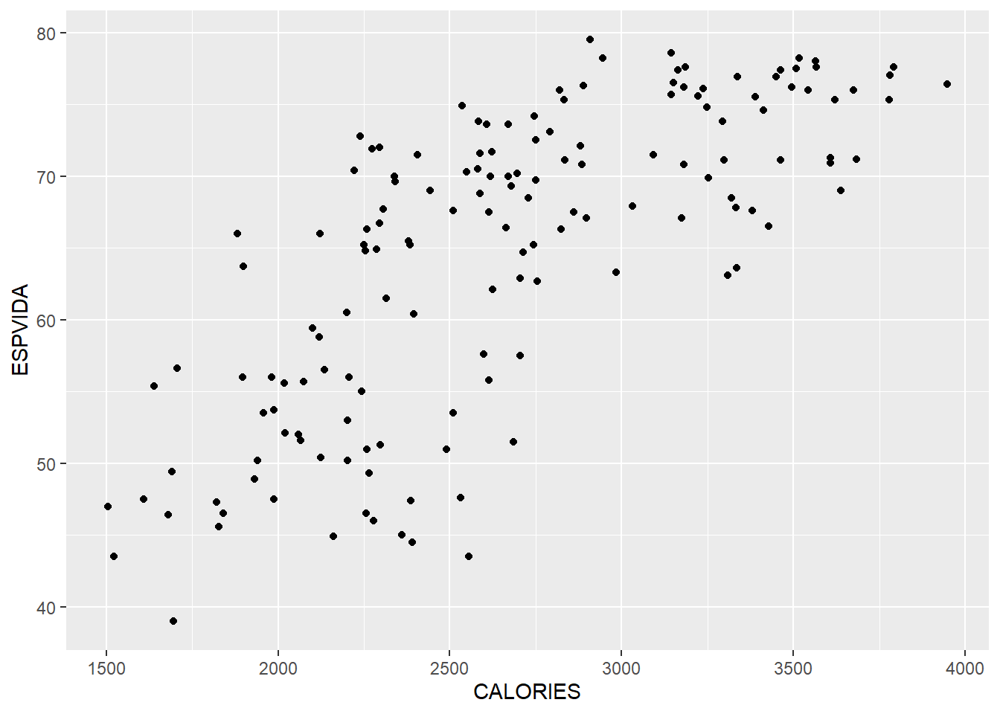

Capítol 14 Llista de problemes
14.1 Problema 1
NOTA: Descarrega la plantilla de solució problema 1 en Rmd.
En el link https://griu.github.io/meacp_2021/data/dataXY.dat hi han les dues variables ESPVIDA i CALORIES del fitxer PAISOS.SAV (són l’esperança de vida y les calories per habitant en diferents paisos del mon). Feu:
Utiliza el program (Excel, SPSS o R) que coneguis. La lectura de les dades amb R seria
dataXY<-read.table('https://raw.githubusercontent.com/griu/griu.github.io/main/meacp_2021/data/dataXY.dat', header=TRUE, dec=",", sep=";")- Una descripció breu univariant de cada una de les variables;
summary(dataXY)## CALORIES ESPVIDA
## Min. :1505 Min. :39.00
## 1st Qu.:2248 1st Qu.:55.77
## Median :2614 Median :67.55
## Mean :2661 Mean :64.57
## 3rd Qu.:3166 3rd Qu.:72.88
## Max. :3947 Max. :79.50- Un diagrama de dispersió de ESPVIDA vs CALORIES. Comenta si s’observa o no associació entre aquests dues variables.
library(ggplot2)
ggplot(dataXY, aes(x=CALORIES, y=ESPVIDA)) +
geom_point()
- Comenta si la associació observada justifica o no parlar de causalitat.
14.2 Problema 2
Considera les dades a PAISOS.SAV, lectura de dades en R:
library(foreign)
data <- read.spss("https://griu.github.io/meacp_2021/data/PAISOS.SAV", use.value.labels = TRUE, to.data.frame = TRUE, use.missings =TRUE)- Quins són els països que tenen menys de 47 anys d’esperança de vida? Quants països tenen menys d’un terç de la seva població alfabetitzada? I d’aquests, quants tenen un PIB per càpita superior a 1.000 dòlars?
- Quina és la mitjana del nombre de diaris que es llegeixen al món? Hi ha diferències en la lectura de diaris segons nivell de desenvolupament humà? Creus que a Espanya se’n llegeixen pocs? perquè?
- Quina és la mitjana d’habitants per metge? Quin és el valor d’aquesta mitjana en cada un dels tres nivells de desenvolupament humà en què s’han classificat els països? Hi ha diferències significatives entre elles?
- En relació al fitxer de dades PAISOS.SAV, tria una variable Y del teu interès i descriu la variació de la mateixa emprant un altre variable del fitxer de dades. En aquest procés, ajusta un model de regressió lineal simple entre la variable depenent i la variable explicativa, descriu els resultats de la regressió lineal simple, i comprova que la hipòtesi de linealitat es plausible en aquestes dades. Si veus que la linealitat no es plausible, efectua la corresponent transformació prèvia de les variables. Recull els residus, I fes un gràfic dels residus vs. la variable depenent ajustada.
- Fes un breu resum de les conclusions que creus que es desprenen de la teva anàlisi. Explica també les limitacions de l’anàlisi.
14.3 Problema 3
En relació a les dades de PAISOS.SAV.
- Investiga la variació de ESPVIDA en funció de CALORIES, controlant o no per altres variables explicatives.
- Inspecciona els residus de la regressió.
- Fes un breu resum de les conclusions que creus que es desprenen de la dependencia de ESPVIDA i CALORIES.
14.4 Problema 4
Considera les dades bank.sav (veure els fitxers de dades que hi ha a la web de l’assignatura) de salaris de treballadors del sector de banca.
Imagina que hi ha un plet en aquesta empresa sobre discriminació per raó de gènere. De fet, el salari actual dels homes és molt superior al de les dones.
Fes les anàlisis de regressió simple i múltiple, amb les interpretacions i arguments corresponents, que aporten evidència empírica en defensa de l’associació que ha iniciat el plet contra l’empresa.
Dades:
library(foreign)
d <- read.spss("https://griu.github.io/meacp_2021/www/data/bank2.sav", to.data.frame=TRUE)
names(d)- Inicialment fes un breu descriptiu (freqüències, mitjanes,…) de les variables del fitxer segons siguin categòriques o contínues.
- Visualitza un scatterplot (gràfic de dispersió) de cadascuna de les variables contínues respecte a la variable del salari actual. Comenta la linealitat o no, de les relacions observades.
- Calcula la correlació de Pearson de cadascuna de les variables contínues i la variable salari actual.
- Transforma la variable Sexo a una variable numèrica.
- Utilitza una regressió lineal simple per tal de verificar que efectivament hi ha diferències salarials entre homes i dones.
- Explora ara diferents models lineals múltiples usant com a variable depenent Salari Actual i com a regressors del model la variable sexe i altres factors de control (Nivell educatiu, Mesos des del contracte, experiència prèvia,…) .
- Un cop escollit el model anota quins son els coeficients del model, el seu nivell de significació, quin nivell d’ajust ha obtingut el model, això com l’histograma dels residus i el gràfics de dispersió dels valors ajustats sobre els residus. Comenta breument els diferents resultats
- Incorpora en el model la variable categòrica Categoria laboral i reporta els mateixos elements que en el punt anterior.
- Escriu quines son les conclusions principals que s’extreuen del model pel que fa a la qüestió de la discriminació del salari.
14.5 Problema 5
Deure: Regressio Logistica
Considera les dades de l’enquesta postelectoral del CIS corresponent a les eleccions generals de 1986, fitxer CIS1542.SAV:
library(foreign)
d<-read.spss("http://84.89.132.1/~satorra/dades/cis1542.sav", to.data.frame=TRUE)
names(d)La variable dependent que vols explicar és ABST86, una variable dicotòmica. Considera com a variables explicatives les següents: MIDA_HAB, SEXE, EDAT, CASAT, ATURAT.
Les dues últimes variables són categòriques. Considera la recodificació següent:
- CASAT, amb valor 1 si EST_CIV=2 i 0 en els altres casos
- ATURAT, amb valor 1 si SIT_LAB=2 i 0 en els altres casos
Estima un model de regressió logística per tal d’explicar l’abstenció en funció d’aquestes 5 variables sociològiques. Treballa els següents punts:
- Quines de les variables incloses en el model són significatives (al 5% de significació)?
- Escriu la equació estimada que relaciona el logit de la probabilitat d’abstenir-se amb les variables explicatives. És lineal aquesta equació?
- Escriu la equació estimada que relaciona la probabilitat d’abstenir-se amb les variables explicatives. És lineal aquesta equació ?
- Segons el model estimat, quina probabilitat té d’abstenir-se una noia soltera, que viu en una població de 60.000 habitants, que té 27 anys, que te una feina. Al mateix per una amiga seva, amb les mateixes característiques, però que està casada i ha perdut la seva feina.
- Considera ara les dones casades i que viuen en una població de 60.000 habitants. Calcula el grafic d’efectes sobre la probabilitat abstenció, de la varible Edat condicionat a si esta o no aturat (pots usar, si vols la funció visreg() vista a classe).
- El mateix que 5. pero pel grup d’homes.
- Comenta les principals diferencies o semblances entre els 2 gràfics anteriors.